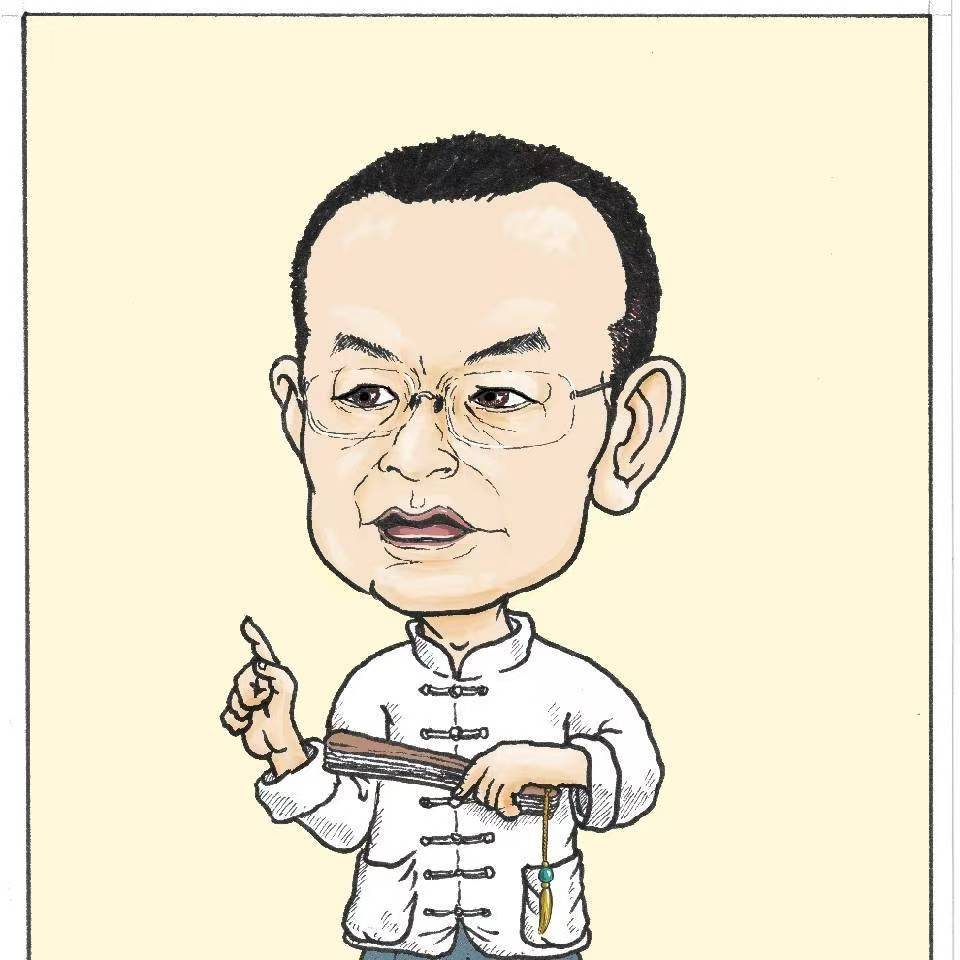

易学与传统文化
围绕易学思想、阴阳五行、传统修身观念，做通俗化讲解与资料整理。

传统文化研习者，长期关注易学、医学气功、身心调理与民间传统文化整理。
About
老道覃宏，多年来研习中国传统文化，曾参与易经研究、医学气功推广、道家功法与祝由文化的学习和交流。其个人分享重在身心平衡、修德养性、日常实践与传统智慧的现代化表达。
本主页用于整理老道的个人经历、课程方向、公益分享和联系方式。相关内容以传统文化交流为主，不替代医学诊断或治疗建议。
Practice
围绕易学思想、阴阳五行、传统修身观念，做通俗化讲解与资料整理。
关注呼吸、静养、导引、身心平衡等实践方法，强调循序渐进和日常可行。
整理祝由相关历史、民间经验与文化脉络，保持敬畏、审慎和开放讨论。
Experience
云南中华周易研究会
曾任副会长、秘书长。
昆明易经研究会
曾任副会长、秘书长。
中国医学气功学会
会员。
国家健身气功指导员
参与传统身心修习和健身气功相关推广。
道家北斗玄功与祝由文化
长期研习与交流，重视传统文化的当代表达。
Contact
欢迎对传统文化、易学、医学气功、祝由文化和身心修习感兴趣的朋友交流。请扫码添加联系。